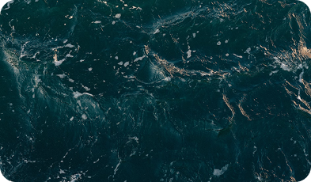

Ghost UXWriter
All of us, designers, at least once per career became an illustrator, copyrighter and only God knows whom else. Out of the question it’s useful and interesting experience, but when we have some time limits we need a special magic.

Content Reel
All of us, designers, at least once per career became an illustrator, copyrighter and only God knows whom else. Out of the question it’s useful and interesting experience, but when we have some time limits we need a special magic.
Status Annotations
All of us, designers, at least once per career became an illustrator, copyrighter and only God knows whom else. Out of the question it’s useful and interesting experience, but when we have some time limits we need a special magic.